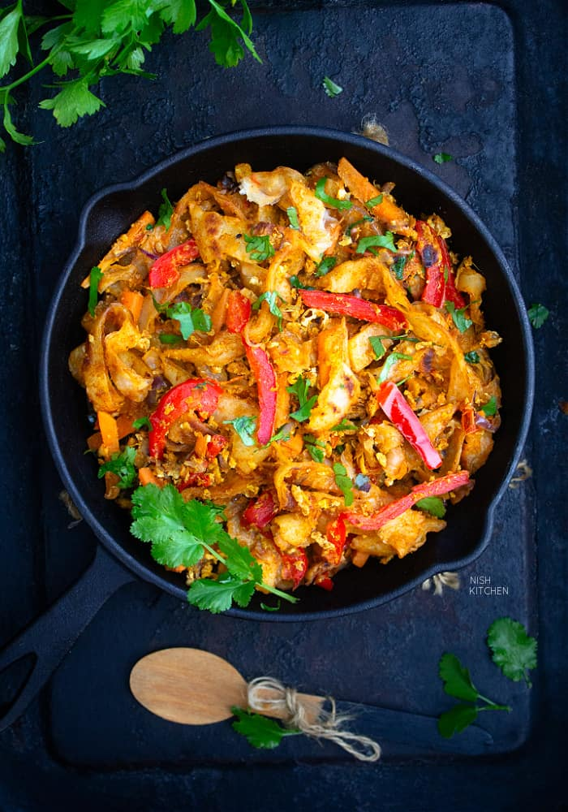

Oriental Stir Fried Parathas
Cooking time: 20 mins
Preparation time: 45 mins
Makes: 12 parathas :)
Ingredients

Dough:
3 teacups plain flour (maida)
1 tbsp oil
1/2 tsp salt
Stuffing:
2 onions slices
1 teacup bean sprouts
1 teacup shredded cabbage
1 teacup carrots, coarsely grated
1/2 tsp soya sauce
1/2 tsp sugar
Salt to taste
2 tbsp oil
Instructions
Dough Mixture:
Mix plain flour, oil and salt, and add a little warm water to make soft dough.
Knead the dough very well for a few minutes and leave aside for half an hour.
Stuffing:
Heat the oil, add the vegetables, and cook 3-4 mins
Add soya sauce, sugar, and salt. Mix well and cool.
How to Proceed
Divide the dough into 12 parts and roll out very thinly.
Put 2-3 tbsp of the stuffing in the center and fold from each side.
Put the parathas on the griddle with folded open edges at the bottom. Cook for a few minutes, turn over on other side, and cook with until crispy.
Repeat for remaining parathas.
Serve hot with chili garlic sauce.